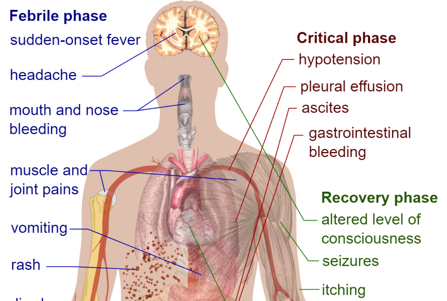
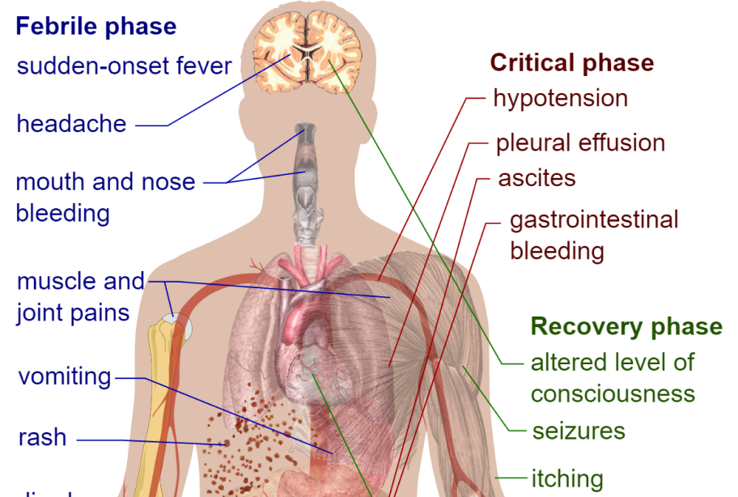

Dengue Hemorrhagic Fever

Dengue Hemorrhagic Fever (DHF) is a severe form of dengue fever,
a mosquito-borne viral disease caused by the dengue virus
(DENV), which is transmitted by Aedes mosquitoes, primarily
Aedes aegypti. DHF can lead to serious complications and death
if not treated properly.
Causes and Symptoms
- Dengue virus (DENV) has four distinct serotypes (DENV-1, DENV-2, DENV-3, DENV-4).
Symptoms
- DHF typically begins with symptoms similar to classic dengue fever but progresses to more severe forms:
- Febrile Phase: Lasts 2-7 days, characterized by high fever, severe headache, pain behind the eyes, joint and muscle pain, rash, nausea, and vomiting.
- Critical Phase: Begins around the time the fever subsides (typically 3-7 days after onset):
- Symptoms: Severe abdominal pain, persistent vomiting, rapid breathing, bleeding gums, blood in vomit or stool, fatigue, and restlessness.
- Warning Signs: Severe plasma leakage, leading to fluid accumulation, respiratory distress, severe bleeding, and organ impairment.
- Recovery Phase: If the patient survives the critical phase, there is a gradual reabsorption of leaked fluid into the bloodstream over 48-72 hours.